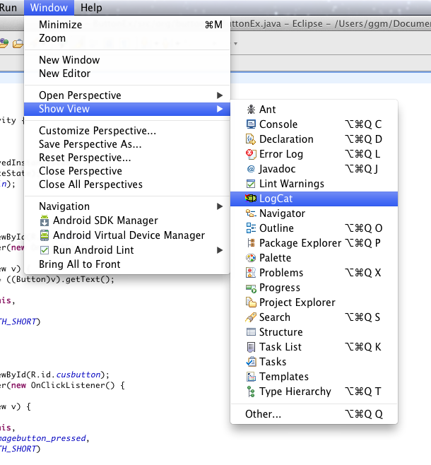
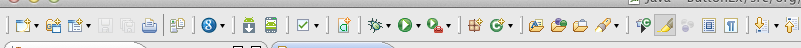
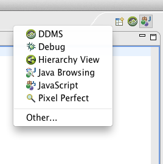
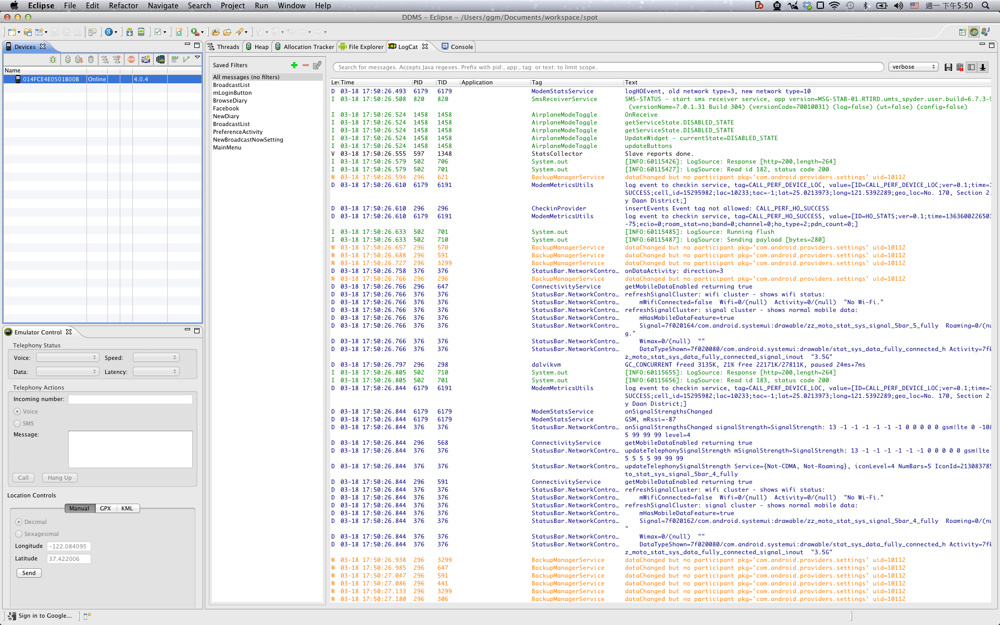
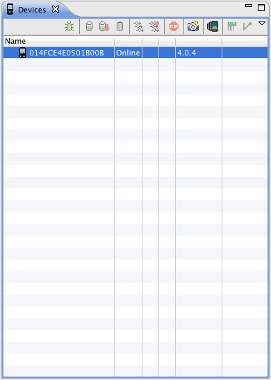
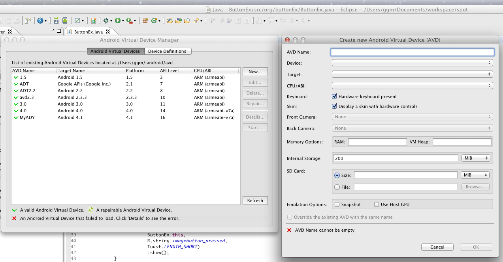
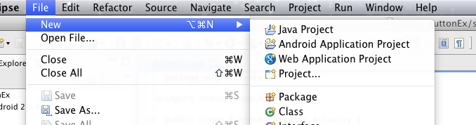
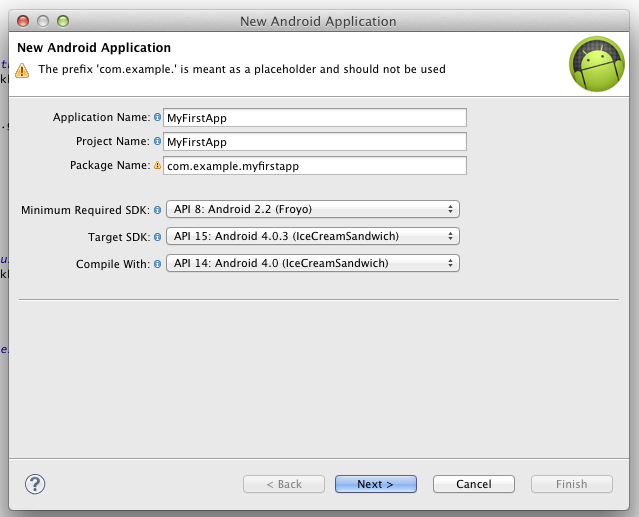

Android 基礎應用程式設計

課程介紹
- Android 基礎應用程式設計
- 課程目標
- 對 Android 有初步認識
- 學會開發 Android 應用程式
- 本課程只是 Android 的冰山一角
- 上課方式
- 10% 投影片講解
- 70% 同步實作講解
- 20% 學員自己動手實作
講師介紹
- 郭冠宏（GGM）
- 台大資訊系
- 工作經驗（實習）
- Google、Intel、Wantoto Inc、Qualcomm
- 教學經驗（課程助教）
課程大綱（cont.）
- Day 0
熟悉 Eclipse 與 Android SDK，介紹 Android 的專案架構
- Day 1
介面設計I，基本元件（Widget）與排版（Layout）
- Day 2
Activity 生命週期與傳遞資料
- Day 3
Intents 與 Broadcast Receiver
課程大綱（cont.）
- Day 4
介面設計II，Menus，DatePicker，ListView
- Day 5
介面設計III，Frament，ActionBar
- Day 6
資料存取，SharedPreferences、SQLite、File、Assets
- Day 7
讀取手機資料，簡訊，通訊錄，系統資訊
課程大綱
- Day 8
連接網際網路
- Day 9
使用第三方API，Google Maps，Facebook
課程評分
- 75% 作業，三次作業達標準即滿分，可討論可查資料
- 25% 出席，可遲到，可早退，可請假
- 及格標準 70 分
環境設定（cont.）
- Java 環境變數設定（Windows）
- 我的電腦右鍵->內容->進階->環境變數 新增:
- a. 變數名稱 PATH
變數值 C:\Program Files\Java\jdk1.7.0\bin
- b. 變數名稱 CLASSPATH
變數值 C:\Program Files\Java\jdk1.7.0\lib
- 如果有別的環境變數，則要在前面加上分號
環境設定（cont.）
- Eclipse plugin
- Eclipse->Help->Install New Software->
- https://dl-ssl.google.com/android/eclipse/
環境設定（cont.）
- Eclipse plugin
- Eclipse->Help->Install New Software->
- https://dl-ssl.google.com/android/eclipse/
開發工具（cont.）
Eclipse Show View

開發工具（cont.）
Eclipse Tool Bar

開發工具（cont.）
Eclipse Main View

開發工具（cont.）
Eclipse DDMS

開發工具（cont.）
Eclipse DDMS device

開發工具（cont.）
Eclipse DDMS logcat

開發工具（cont.）
Android Emulator

New Android Porject（cont.）
File -> New -> Android Application Project

New Android Porject（cont.）
Next .. Next and Next
